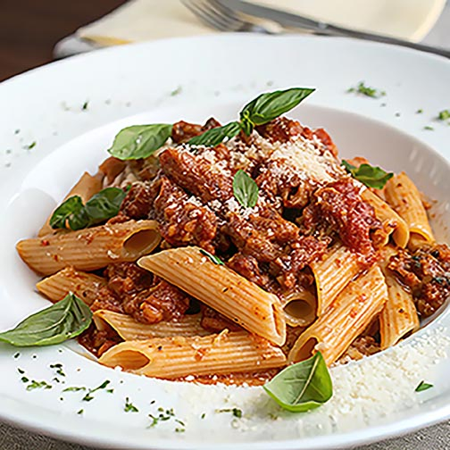

Beefy Joy Pasta
A warm and comforting Rigatoni dish filled with savory ground beef, tomato sauce and melted cheese. It's simple, flavorful, and made with love.
Ingredients
What You'll Need
- 16oz Priano Rigatoni pasta (Aldi brand or any kind)
- 1b Lean ground beef (Aldi brand or any kind)
- 2 Reggano Pasta sauce (Aldi brand or any kind)
- ½ cup Monzarella cheese
- 2 cloves Minced garlic
- ½ Onion
- Salt and pepper
Instructions
How to Make It
- Bring a large pot of salted water to boil. Add the Rigatoni pasta 16oz and cook for 11 minutes, stirring occassionally. Drain and set aside.
- Heat a large skillet over medium heat.Add the ground beef and cook for about 6-8 minutes, breaking it apart with spoon, until fully browned.
- Add the chopped onions and minced garlic to the skillet. Cook for 2-3 minutes until the onion becomes soft.
- Pour in the pasta sauce and stir all together till it simmer for about 5 minutes.
- Add the cooked rigatoni to the skillet and stir until the pasta is completely coated with the beefy sauce.
- Sprinkle monzzarella cheese on top and stir until the cheese melts.
- Remove from the heat, serve, and enjoy!